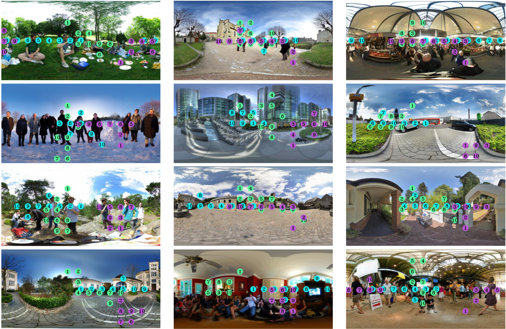
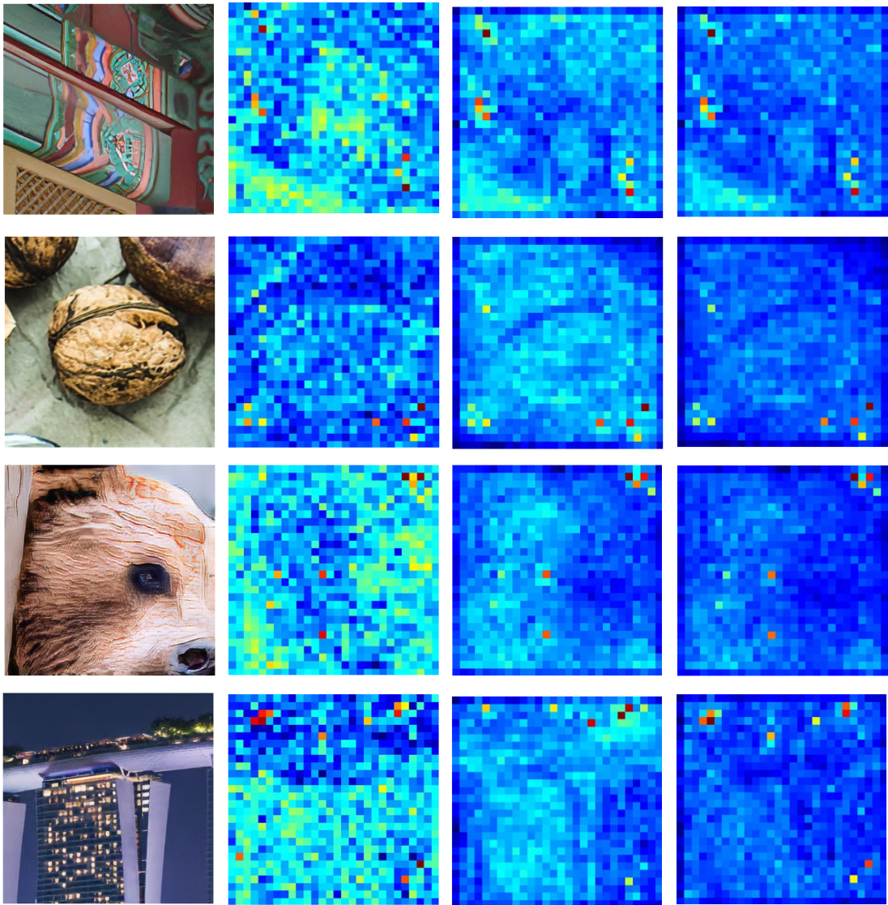

|
Tianhe Wu
My name is Tianhe Wu, a third-year graduate student at the Intelligent Computing Lab at Tsinghua University, under the supervision of Professor Yujiu Yang. Currently, I am a research assistant at City University of Hong Kong, working with Professor Kede Ma. I am also an intern at the OPPO Research Institute, where I am mentored by Professor Lei Zhang. I am passionate about advancing the frontiers of artificial intelligence and computer vision.
Email /
Google Scholar /
Github
|
|
|
Research
My research focuses on Multimodal Large Language Models (MLLMs), Image Quality Assessment (IQA), and Low-level Vision. Currently, most of my work is centered around IQA tasks, with future research directions primarily oriented towards MLLMs.
|
Publications & Preprints (* means equal contribution)
|
|
A Comprehensive Study of Multimodal Large Language Models for Image Quality Assessment
Tianhe Wu,
Kede Ma,
Jie Liang,
Yujiu Yang,
Lei Zhang
ECCV 2024
[arXiv] [Code]
We conducted a systematic evaluation of MLLMs' ability to perceive image quality.
|
|

|
Assessor360: Multi-sequence Network for Blind Omnidirectional Image Quality Assessment
Tianhe Wu*,
Shuwei Shi*,
Haoming Cai,
Mingdeng Cao,
Jing Xiao,
Yinqiang Zheng,
Yujiu Yang
NIPS 2023
[arXiv] [Code]
We proposed a new paradram for blind Omnidirectional IQA.
|
|
|
Attentions Help CNNs See Better: Attention-based Hybrid Image Quality Assessment Network
Shanshan Lao*,
Yuan Gong*,
Shuwei Shi,
Sidi Yang,
Tianhe Wu,
Jiahao Wang,
Weihao Xia,
Yujiu Yang
CVPRW 2022 Oral
[arXiv] [Code]
The champion method for NTIRE2022 Full-Reference IQA.
|
|

|
MANIQA: Multi-dimension Attention Network for No-Reference Image Quality Assessment
Sidi Yang*,
Tianhe Wu*,
Shuwei Shi,
Shanshan Lao*,
Yuan Gong,
Mingdeng Cao,
Jiahao Wang,
Yujiu Yang
CVPRW 2022 Oral
[arXiv] [Code]
The champion method for NTIRE2022 No-Reference IQA.
|
|
{kind=link}